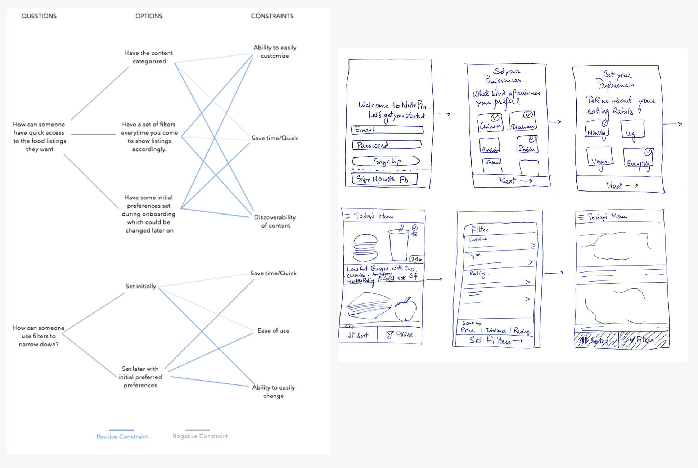

NutriPin
A mobile application for students that helps discover healthy food options in the vicinity.
Duration:
3 month
Type:
Individual Academic Project
Roles and Responsibilities:
Product Design
Problem Overview
College students have to face the problem of discovering healthy food options around them which often leads to unhealthy eating. Students have a time crunch with their curriculum and don't get enough time to cook a meal. There are important factors like food options, time, distance, price that play a role in making their decision to grab something to eat.
Solution
NutriPin is a food ordering marketplace that helps students find dishes around them and nudges them to eat healthy by providing dietary information. Students can set preferences and filter options to find the right option for them. Once they have made a decision on the dish, they can order it from their phone and collect it from the restaurant and save time.
Design Process
Competetive Analysis
I did a competetive analysis of Yelp, Grubhub, Healthy Dining Finder, HappyCow to evaluate their strengths and weaknesses. None of these applications are catering to the problem of discovery of healthy food options efficiently. All of them except Healthy Dining Finder weren’t built to solely help discover healthy food and thus healthy food discovery is just an add-on. Also, none of the options are focussed on food discovery and are rather restaurant discovery platforms.
Personas
I created User Personas spanning primary users of the system.
Brainstorming and Ideating
I conducted a brainstorming session with students to generate various ideas to approach the problem.
Design Synthesis and Sketching
In this phase, I used the Questions, Options and Constraints(QOC) method to help synthesize the approach I would follow to execute my ideas. I then started itereating by sketching key screens for the mobile app.

Paper Prototyping and Testing
With design synthesis done, I started with lo-fidelity paper-prototyping and used this to get user feedback and reiterate.
Final Design
After understanding the shortcomings of the paper prototype, I created visual designs for the application. Also, I designed for an end-to-end experieces by designing the onboarding experience, preferences setting, sign in and sign up experiences and usage of filters.